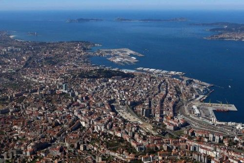

BIENVENIDO A MI WEB
En éste website encontrarás información acerca de los principales lugares de interés y turísticos de la ciudad de Vigo. Echa un vistazo y te recomendamos que visites ésta maravillosa y acogedora ciudad.
Si lo haces seguro que no te arrepentirás.
